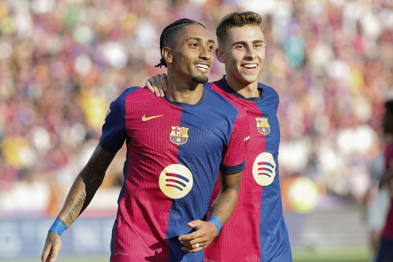
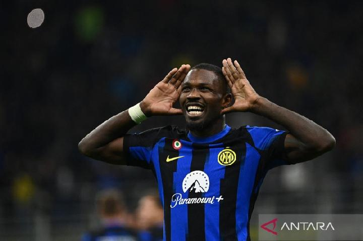
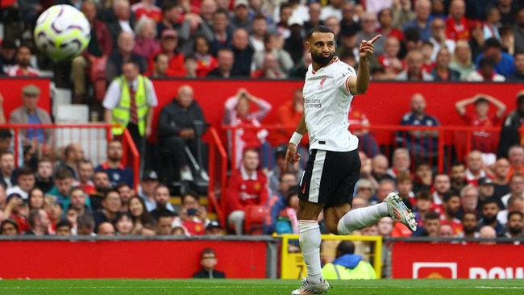
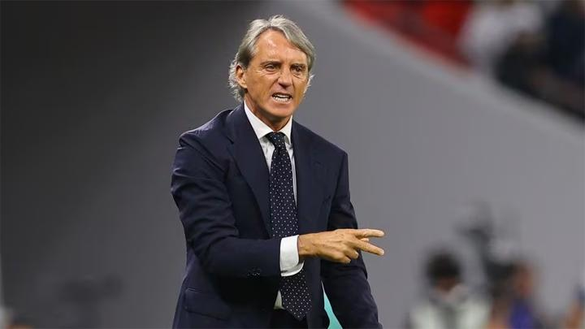
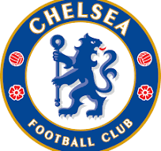
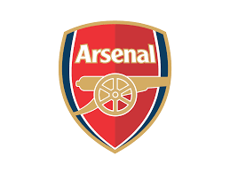
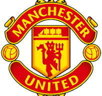
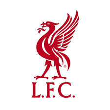
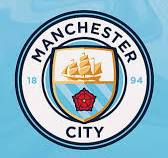
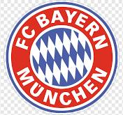

|

La Liga Results: Barcelona vs Valladolid  Prediction: Inter Milan vs Atalanta  Liverpool vs Manchester United  Indonesia vs Arab Saudi |
Transfer Musim Panas 2024Kompetisi di liga top Eropa 2024/2025 akan berlangsung. Selama bursa transfer musim dingin dibuka, klub-klub top Eropa mulai menambah amunisi dengan merekrut pemain baru. Di sisi lain, mereka juga melepas pemainnya ke klub lain. Pada bursa transfer awal tahun ini, klub-klub memanfaatkannya untuk meningkatkan kekuatan skuadnya. Tidak seperti biasa, bursa transfer musim panas kali ini memiliki banyak kejutan. Banyak klub-klub top Eropa yang mendatangkan nama-nama besar. Berikut rekrutan klub top Eropa yang mendatangkan dan mengeluarkan pemainnyaCHELSEA
ARSENAL
Manchester United
Liverpool
Manchester City
Real Madrid
Barcelona
Atletico Madrid
Bayern Munich
Itulah beberapa perekrutan terbaik dari klub-klub terbaik Eropa. |
Pembelian Termahal di Musim Panas 2024
| Nama Pemain | Posisi | Klub Asal | Klub Baru | Harga (Juta Euro) |
|---|---|---|---|---|
| Julian Alvarez | Centre-Forward | Manchester City | Atletico Madrid | 75 juta euro |
| Dominic Solanke | Centre-Forward | Bournemouth | Tottenham | 64,3 juta euro |
| Lenny Yoro | Centre-Back | Lille | Manchester United | 62 juta euro |
| Moussa Diaby | Right Winger | Aston Villa | Al-Ittihad | 60 juta euro |
| Pedro Neto | Left Winger | Wolverhampton | Chelsea | 60 juta euro |
© 2024 tugas web saya